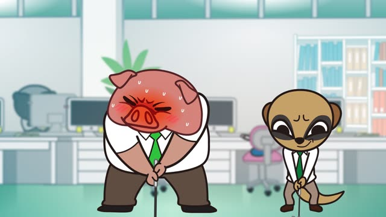
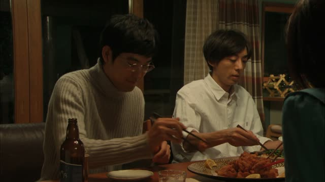
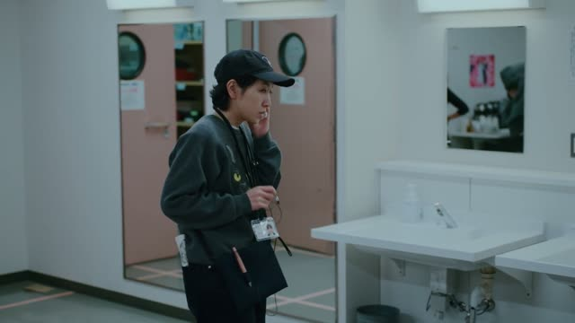
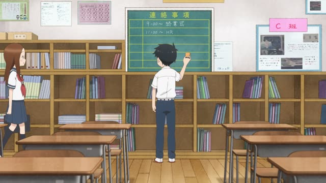
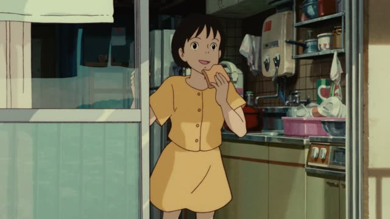

～そう (Looks)
| Polite | ～そうです |
|---|---|
| Casual | ～そうだ・～そう |
Same meaning: "looks like". Only the politeness changes.
Verb: ます-stem. い-adjective: drop い. な-adjective: as is. Then そう.
| Word | Add | Ending | ||
|---|---|---|---|---|
| Noun | 学生 | ✕ | – | Not after a noun: say 学生みたい |
| な-adjective | 静か | – | そう | It looks quiet |
| Verb | 行き (行く) | – | そう | Looks like he'll go |
| い-adjective | 高 (高い) | – | そう | It looks expensive |
Two odd ones: いい → よさそう, ない → なさそう.

Aggretsuko · Season 1, Episode 2
過労で倒れてしまいそうです
"I feel like I'm going to collapse from overwork."
～そう means "looks like": you judge from what you see or feel right now. After a verb, it means it looks about to happen: 倒れそう, "about to collapse".
Verbs take their ます-stem (倒れてしまいます → 倒れてしまいそう). い-adjectives drop い (おいしい → おいしそう), な-adjectives stay as they are. On this card, he's so busy he feels he could collapse any moment.
Two odd ones: いい becomes よさそう, ない becomes なさそう.

Quartet · Episode 1
わあ おいしそう
"Wow, that looks delicious!"
On this card, the food has just arrived and she says it looks tasty. Once you've eaten it, it's just おいしい.
Quick Examples
Your friend has been working all weekend.
大変そうだね。
"Looks tough."
CasualA cake in a shop window.
このケーキ、おいしそうですね。
"This cake looks delicious."
PoliteThe sky goes dark.
雨が降りそうだ。
"It looks like it's going to rain."
After a verb: about to happen.
CasualWith and without
このケーキはおいしい。
This cake is delicious. You ate it.
このケーキはおいしそう。
This cake looks delicious. You're only looking.
Examples from Media
Kekkon Dekinai Otoko · Episode 1
先生は安全運転しそうな感じですね
"You seem like someone who'd drive carefully."
～そうな + noun: before a noun, そう works like a な-adjective.

Brush Up Life · Episode 4
どのくらいかかりそうですかね？
"About how long does it look like it'll take?"
かかる → かかり: the ます-stem.
Last Samurai Standing · Episode 5
今日はもう 動きもなさそうですな
"Looks like nothing more will happen today."
ない → なさそう. ですな is an old-fashioned ですね.
1 Litre of Tears · Episode 3
なんか運動不足になっちゃいそうですね
"Seems like you'd end up not getting much exercise."
なっちゃう → なっちゃいそう.

Teasing Master Takagi-san · Season 2, Episode 10
眠そうだね
"You look sleepy."
眠い drops い: 眠そう.
Vinland Saga · Episode 17
よう！ トルフィン 元気そうだな
"Hey, Thorfinn! You look well."
元気 is a な-adjective: no change.

Whisper of the Heart
今日は いいことありそう！
"Feels like something good will happen today!"
ある → ありそう: a feeling about what's coming.
Odd Taxi · Episode 2
超よさそうだ
"Sounds really lucky."
About the word 運転手, "the hand that rolls luck". いい → よさそう.
Further Reading
Tae Kim's Guide to Japanese Grammar
Expressing similarity or hearsay · Guessing at an outcome using 「～そう」